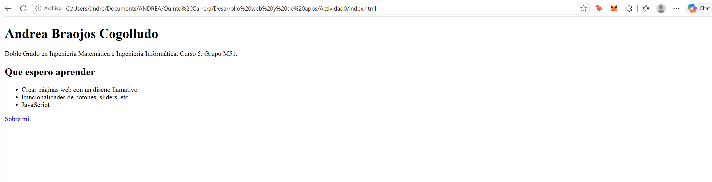
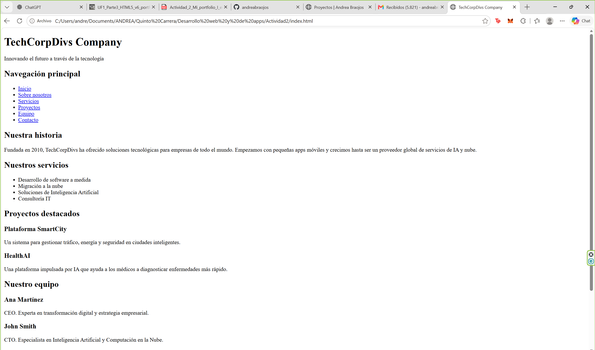
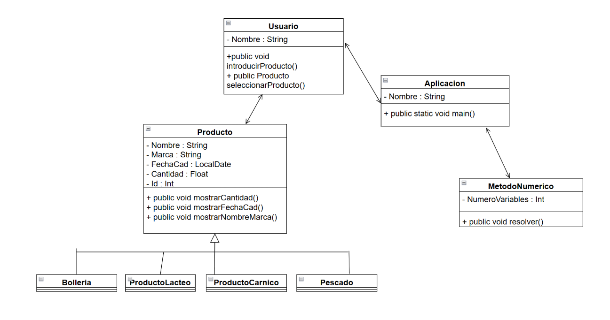

Mi primera web de presentación

Práctica introductoria con una página de presentación y otra sobre mí, enlazadas entre sí. He practicado el uso de títulos, párrafos, listas y enlaces relativos.
- HTML5
Estudiante del Doble Grado en Ingeniería Matemática Aplicada al Análisis de Datos e Ingeniería Informática, con interés en la inteligencia artificial.

Práctica introductoria con una página de presentación y otra sobre mí, enlazadas entre sí. He practicado el uso de títulos, párrafos, listas y enlaces relativos.

Reestructuré el HTML de una página de empresa ficticia utilizando etiquetas semánticas. He practicado cómo distinguir la cabecera, la navegación, las secciones, los artículos y el pie de página.
En curso

Proyecto personal de un asistente en Python que permite guardar recuerdos y gestionar tareas desde la terminal. Participé en su diseño, programación, pruebas y revisión. Con este proyecto he practicado el diseño, la programación, las pruebas y la revisión de código.

Proyecto individual en Java para añadir alimentos, consultar existencias y controlar caducidades. Aprendí a organizar el programa en clases y objetos y a manejar colecciones de alimentos.

Proyecto universitario en colaboración con HPE para analizar y predecir la demanda eléctrica en España. Desarrollé la página web y participé en otras tareas del equipo. Aprendí a presentar datos y predicciones mediante una interfaz web.

Proyecto universitario en colaboración con HPE sobre accidentalidad en Madrid. Participé en la limpieza y preparación de datos con Python y Jupyter Notebook. Aprendí a preparar datos reales para su análisis, detectar valores faltantes y eliminar registros duplicados.
| Proyecto | Categoría | Año | Tecnología |
|---|---|---|---|
| Mi primera web de presentación | Desarrollo web | 2026 | HTML5 |
| Reestructuración semántica de una web | Desarrollo web | 2026 | HTML5 |
| Athena V1 | Programación e IA | 2026 | Python, Ollama |
| La Despensa | Programación e IA | 2023 | Java, MySQL |
| EPANET | Análisis de datos | 2024-2025 | HTML5, CSS, JavaScript |
| Análisis de accidentalidad en Madrid | Análisis de datos | 2023 | Python, Jupyter Notebook, pandas |
| Total de proyectos | 6 | ||